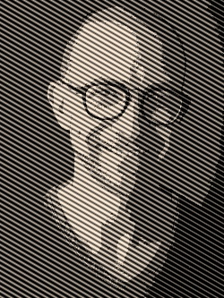

About
Empowering scientific & technological breakthroughs through advanced reasoning AI systems.
Algorithmic Productions
Algorithmic Productions is an algorithms lab founded on the belief that scientific and technological breakthroughs have propelled humanity forward; from the discovery of nitrogen extraction to the advent of computers and the internet. We view reasoning AI as the next force, accelerating the pace of innovation toward a more abundant future.
Our work bridges advanced machine learning with intuitive user experiences, ensuring that breakthroughs in research translate into real‐world impact. By focusing on interpretability, reliability, and human‐centric design, we craft solutions that unlock new frontiers in science, technology, and beyond. Whether pioneering novel AI‐infused systems or enhancing existing infrastructures with intelligent reasoning capabilities, Algorithmic Productions is committed to shaping the next era of discovery.
Meet the Founder
Dr. Eli Bressert (Ph.D., Astrophysics) has a passion for harnessing ML/AI to create a brighter, more innovative future. Over the course of his career, spanning leadership roles at Netflix, Apple, Stitch Fix, and Scenset (founded–AI travel startup), he's consistently bridged research and product development to drive high‐impact, user‐centric solutions.
Fueled by the conviction that reasoning AI is the key to unlocking humanity's next wave of breakthroughs, he founded Algorithmic Productions to merge scientific rigor with innovative algorithmic solutions. We believe in building systems that aren't just powerful, but also transparent, secure, and ultimately transformative, paving the way for accelerated scientific and technological progress.